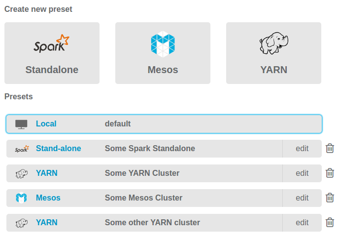

Analytical Engine comes bundled with a local, single-node Spark cluster to allow you to get started quickly. To assess its full potential, however, configure Analytical Engine to utilize external clusters.
In order to connect to a cluster, the machine with Analytical Engine must be addressable from every node of the cluster. This is because Analytical Engine runs applications in client mode - your machine runs Spark driver.
In Analytical Engine Editor, you can specify all options needed to connect to your cluster.
Aside from the Spark Master URL, probably the most important option is the User IP.
It has to be set to such an IP of the machine with Analytical Engine that is visible from the cluster.
Conveniently, Analytical Engine allows you to store configurations for various clusters.
 Cluster Presets in Analytical Engine
While working with external clusters is straight-forward when running
Dockerized Analytical Engine,
it’s also possible using Analytical Engine as a Vagrant Image.
There is a commented line in the Vagrantfile.
It needs to be uncommented in order for the VM to receive its own IP address, that is visible from
the Spark cluster.
...
# Uncomment this line if you want this VM to connect directly to your network.
config.vm.network "public_network", use_dhcp_assigned_default_route: true
...After the vagrant up command you are asked which network interface should be used to obtain
the new IP address. You should select the interface which you normally use to connect to the cluster.
Note that this method will not work if the network configuration prevents bridge
networking - you should contact your admins if this is the case.
Furthermore, it’s important to remember that the User IP option in the cluster configuration
should be set to the VM’s IP.
You can obtain it by accessing the VM with vagrant ssh and using the ifconfig command.
For more details on Vagrant configuration, take a look at Vagrant documentation.
In case of any problems with connecting to external cluster, it is helpful to read error logs
produced by the Spark application. Go to your Analytical Engine startup directory
(where you keep either docker-compose.yml or Vagrantfile).
The relevant logs can be found in spark_applications_logs directory.